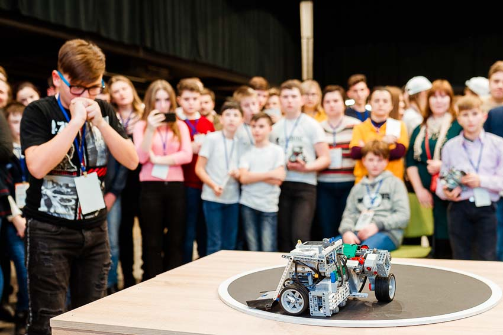
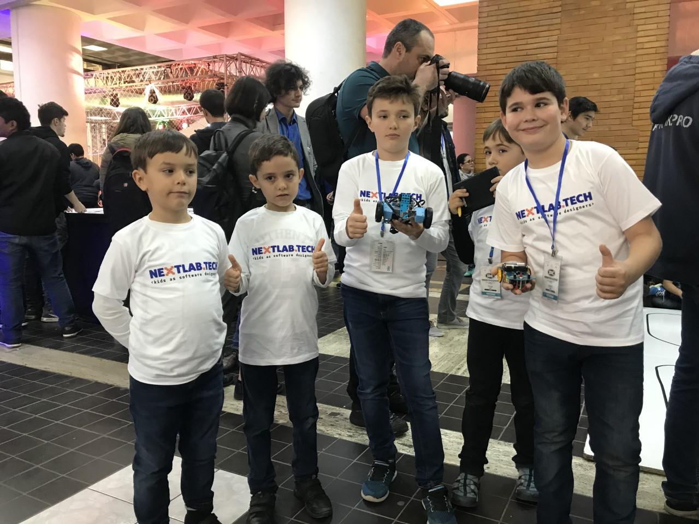

Explorează Robotica - participă la concursuri
Concursul First Lego League
Multă ingeniozitate, creativitate și voie bună veți găsi la concursul FIRST LEGO League. Veți cunoaște tineri entuziaști, plini de idei îndrăznețe. Tehnologiile vor schimba viitorul, iar tânăra generație este cea care se împacă cel mai bine cu inovațiile. Este un eveniment impresionant pe care Guvernul SUA l-a sprijinit prin intermediul Proiectului Tehnologiile Viitorului, finanțat de USAID și Suedia. Prin proiectele dezvoltate echipele dau dovadă de abilități din domeniile științei, tehnologiei și ingineriei pe care le-au dobândit în școli la cursul de robotică educațională. Educația STEAM este esențială în pregătirea tinerilor apți pentru economia viitorului. Acești tineri reprezintă antreprenorii, inginerii și liderii inovatori de mâine. First Lego League Challenge este cea mai mare competiție internațională în domeniul tehnologiei și roboticii, dedicată copiilor și adolescenților cu vârste cuprinse între 9 și 16 ani, care se desfășoară în 110 de țări, cu participarea a peste 680 mii de elevi.
Concursul NEXTLAB.TECH
Vino la cel mai avansat concurs de robotică pentru elevii din România! Prima fază e bazată pe roboței virtuali și e 100% online! Faza a doua presupune construirea unor roboţei fizici. Sponsorul principal naţional Banca Comercială Română oferă gratuit peste 600 de kit-uri de roboţi, finanţează lecţii şi sesiuni de roboajutor. Elevii și profesorii pot beneficia de roboței gratuiți și de lecții gratuite de robotică în cadrul programului ROMANIA TECH NATION. În paralel cu lecțiile și kit-urile gratuite de robotică, oferim și posibilitatea de a participa la concursul NEXTLAB.TECH, cel mai mare concurs de robotică școlară din România destinat elevilor cu vârsta cuprinsă între 8 și 16 ani. Concursul se desfășoară sub forma unui robohackathon online. Participând, elevii se pregătesc pentru meseriile viitorului și învață să programeze roboței bazați pe Arduino și să lucreze în Open Roberta, Tinkercad, Mixly, Arduino IDE şi C. Toţi elevii beneficiază gratuit de cursuri de robotică susținute de profesori universitari din domeniul informaticii prin webinarii.
Lincuri utile în pregătire
| Ghidul tău în lumea roboticii | Robotica.md |
| Ghidul tău despre robotică | Logiscool |
| Instruire | Robocode |
| Robotica pe Facebook |